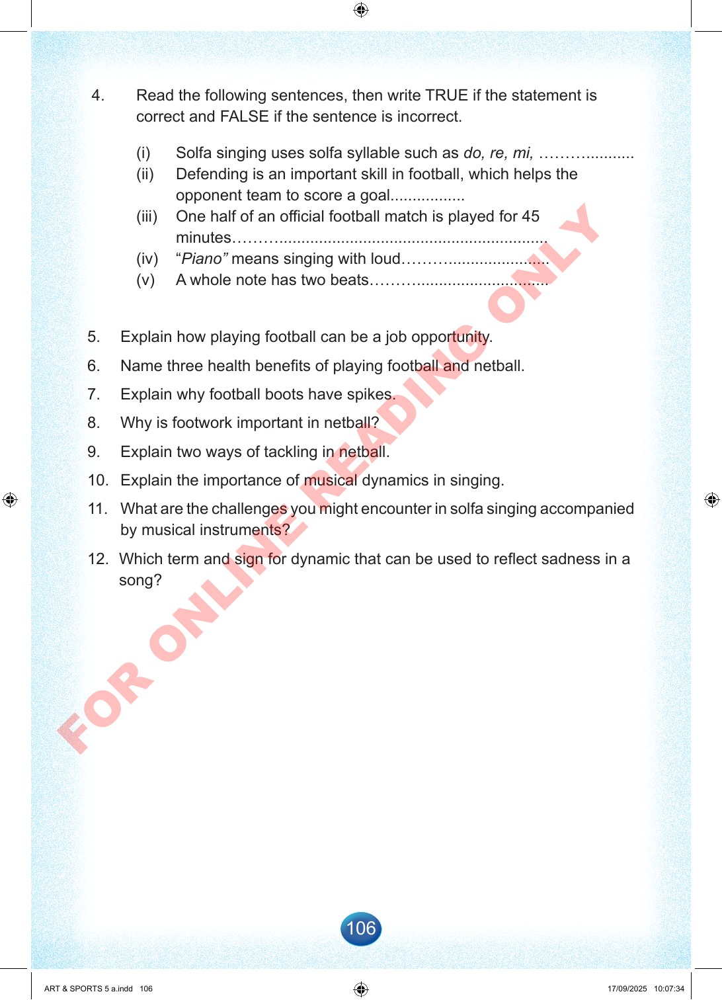

106
4.
Read
the
following
sentences,
then
write
TRUE
if
the
statement
is
correct
and
FALSE
if
the
sentence
is
incorrect.
(i)
Solfa
singing
uses
solfa
syllable
such
as
do,
re,
mi,
………...........
(ii)
Defending
is
an
important
skill
in
football,
which
helps
the
opponent
team
to
score
a
goal.................
(iii)
One
half
of
an
official
football
match
is
played
for
45
minutes……….............................................................
(iv)
“Piano”
means
singing
with
loud……….......................
(v)
A
whole
note
has
two
beats………..............................
5.
Explain
how
playing
football
can
be
a
job
opportunity.
6.
Name
three
health
benefits
of
playing
football
and
netball.
7.
Explain
why
football
boots
have
spikes.
8.
Why
is
footwork
important
in
netball?
9.
Explain
two
ways
of
tackling
in
netball.
10.
Explain
the
importance
of
musical
dynamics
in
singing.
11.
What
are
the
challenges
you
might
encounter
in
solfa
singing
accompanied
by
musical
instruments?
12.
Which
term
and
sign
for
dynamic
that
can
be
used
to
reflect
sadness
in
a
song?
ART
&
SPORTS
5
a.indd
106
ART
&
SPORTS
5
a.indd
106
17/09/2025
10:07:34
17/09/2025
10:07:34
F
O
R
O
N
L
I
N
E
R
E
A
D
I
N
G
O
N
L
Y